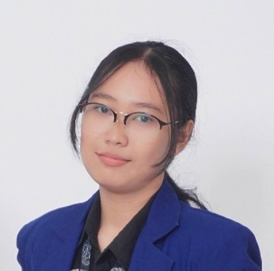
HELLO, I AM
Asyifa Nur Khasanah
Mahasiswa Universitas Negeri Yogyakarta, Program Studi Teknik Manufaktur angkatan 2022. Tertarik mendalam pada Desain 3D Modeling, Perawatan & Perbaikan Alat, dan Pengelasan. Mampu mengoperasikan Mesin Bubut, Milling, Frais, dan CNC.
Sebagai mahasiswa tingkat akhir, saya tengah berfokus menyelesaikan penelitian berjudul "Pengaruh Heat Input terhadap Sifat Mekanis dan Laju Korosi pada Dissimilar Baja ASTM A36 dan AISI 1040 dengan Proses Pengelasan GMAW".
Pendidikan
Universitas Negeri Yogyakarta
Angkatan 2022 - Juli 2026Fakultas Teknik, Program Studi Teknik Manufaktur S1
GPA: 3,71 / 4,00
Mata Kuliah Relevan: HSE/K3, Total Quality Management, Manufacturing Process, Welding, Maintenance.
SMK Negeri 1 Cilacap
Angkatan 2020 - Agustus 2022Jurusan Usaha Perjalanan Wisata
GPA: 88,33
Pengalaman Kerja & Magang
Internship
Jul 2021 - Nov 2021 | PT. Lingkaran Bali🔹Memberikan pelayanan informasi kepada pengunjung terkait destinasi wisata secara informatif dan komunikatif.
🔹Membantu proses pelayanan pelanggan dengan memastikan kebutuhan informasi wisata terpenuhi secara tepat dan ramah.
🔹Mengelola konten serta membantu pengelolaan media sosial perusahaan untuk meningkatkan engagement dan promosi digital
Praktik Kerja Lapangan (PKL)
Okt 2025 - Des 2025 | PPSDM MIGAS Cepu🔹Mendukung kegiatan sertifikasi dengan berperan sebagai asisten pengawas untuk memastikan proses ujian berjalan tertib dan sesuai prosedur.
🔹Melakukan pengawasan peserta selama proses sertifikasi guna menjaga integritas dan kelancaran pelaksanaan kegiatan.
🔹Berkoordinasi dengan tim pelaksana dalam menjaga ketertiban serta kenyamanan lingkungan ujian
Project Experience & Manufacturing
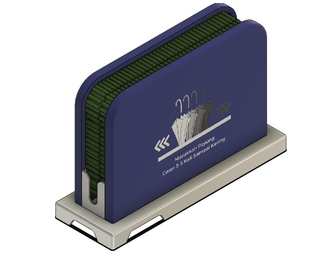
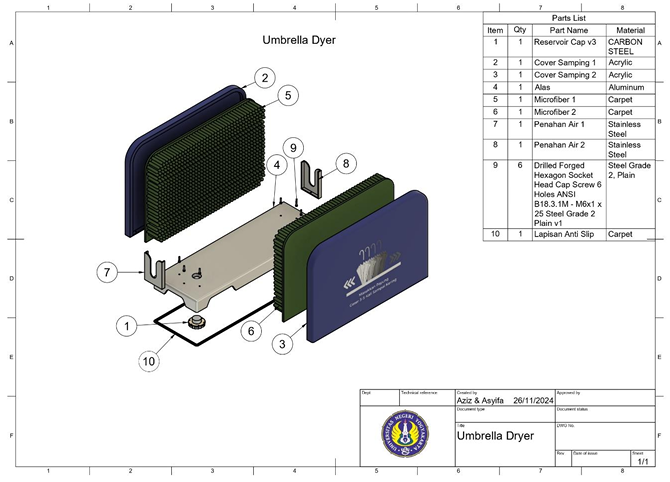
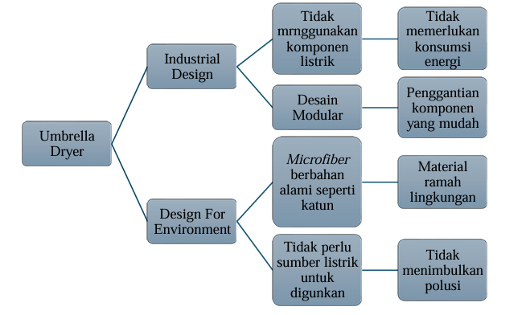
Desain Produk Umbrella Dryer
Nov 2024 | DPTM FT UNY🔹Merancang umbrella dryer portabel dengan pemilihan bahan penyerap air yang cepat kering dan wadah penampung air untuk menjaga kebersihan lantai.
🔹Mengembangkan solusi praktis berupa umbrella dryer yang mudah digunakan oleh konsumen di berbagai tempat, seperti seperti rumah, kantor, pusat perbelanjaan, dan ruang publik lainnya.
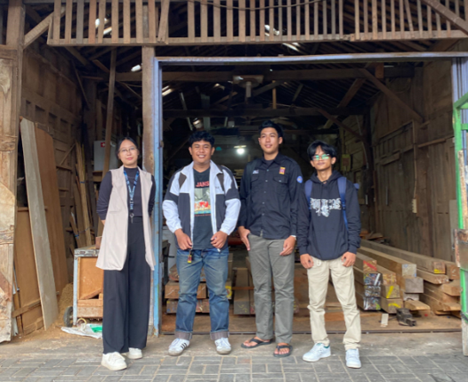
Analisis Perbaikan Pengendalian Kualitas Produk
Nov 2024 | Workshop Gun Aneka🔹Mengidentifikasi masalah kualitas dalam proses produksi pada suatu produk kusen di Workshop Gun Aneka.
🔹Mengevaluasi efektivitas metode Six Sigma dan FMEA dalam mengidentifikasi dan mengatasi masalah kualitas produk.
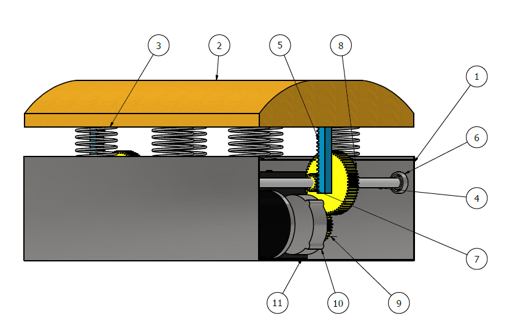
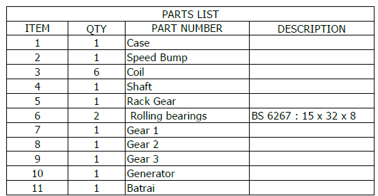
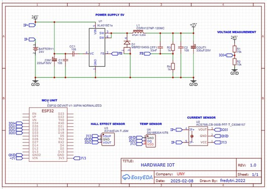
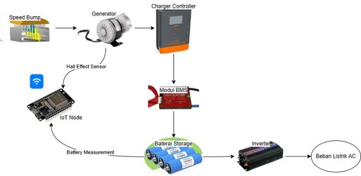
Rancang Bangun Speed Bump Power Generation Off-Grid Terintegrasi IoT Menggunakan Metode Algoritma dengan Teknologi Machine Learning
Feb 2025 | SIMBELMAWA KEMENDIKBUD🔹Merancang produk pembangkit listrik dengan mengkonversi energi mekanik kendaraan melalui speed bump menjadi energi listrik yang efisien dan berkelanjutan.
🔹Mengembangkan sistem IoT dan Machine Learning untuk monitoring secara real-time dan prediksi preventif kinerja komponen pembangkit listrik.
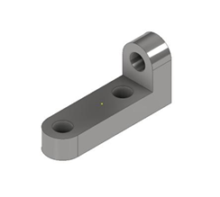
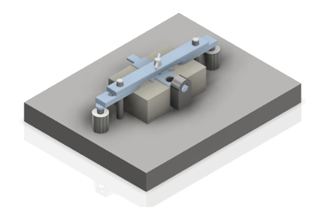
Desain Jig & Fixture Manual Drilling
Apr 2025 | DPTM FT UNY🔹Merancang jig & fixture untuk proses manual drilling guna meningkatkan akurasi posisi pengeboran dan menjaga konsistensi kualitas produk pada produksi massal.
🔹Mengembangkan desain alat bantu yang ergonomis dan mudah digunakan untuk mempercepat proses produksi serta mengurangi potensi kesalahan operator selama proses pengeboran.
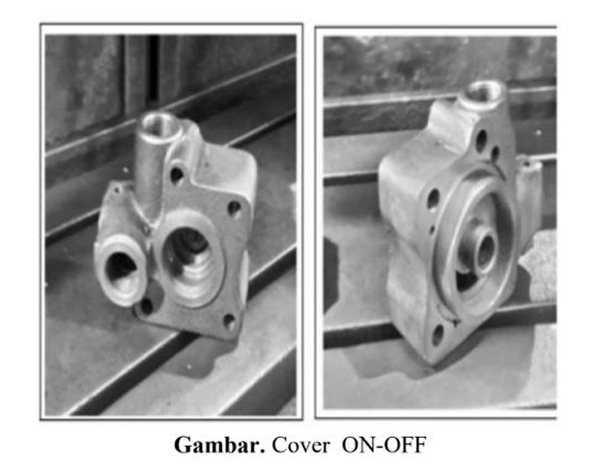
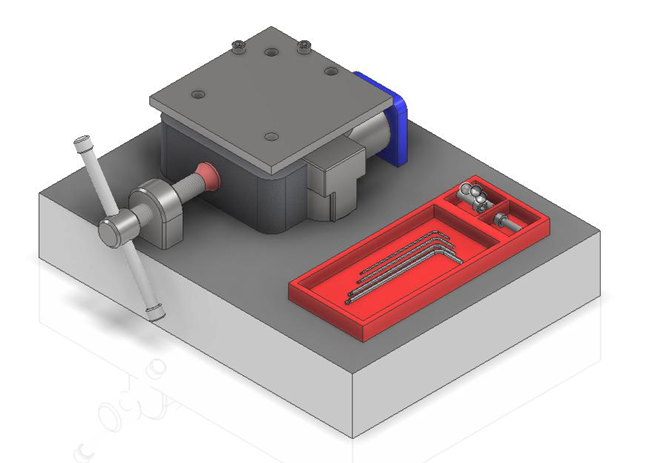
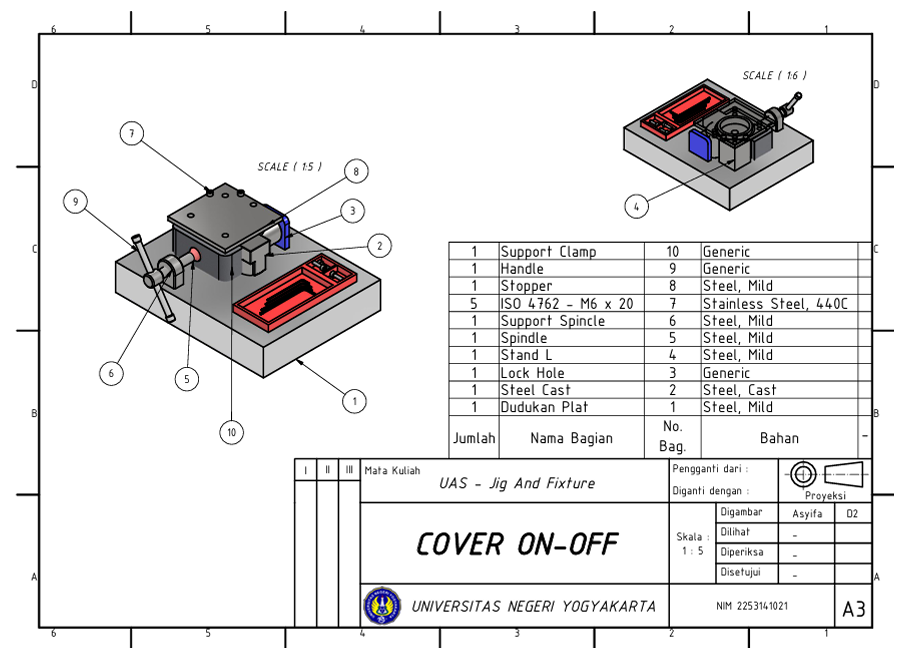
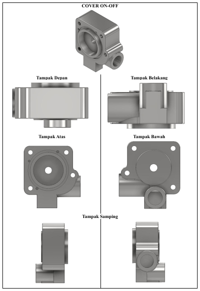
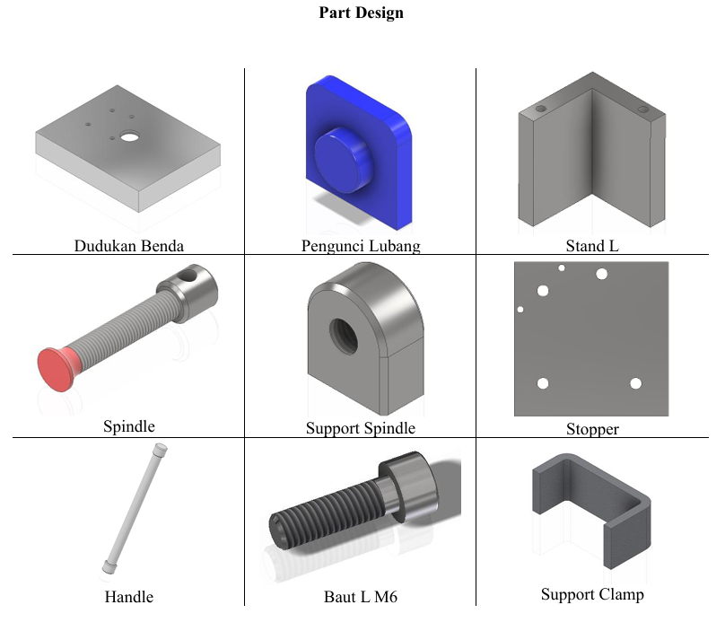
Desain Jig & Fixture Produk Cover On-Off Sistem Pengereman Kereta
Apr 2025 | DPTM FT UNY🔹Merancang jig & fixture untuk untuk memegang benda kerja secara presisi, yang akan mengurangi kesalahan manusia dan produk cacat, sehingga menghemat biaya material dan pengerjaan ulang.
🔹Mengembangkan desain alat bantu yang ergonomis dan relatif memiliki sedikit komponen utama yang terpisah, yang dapat mengurangi waktu perakitan dan biaya tenaga kerja.
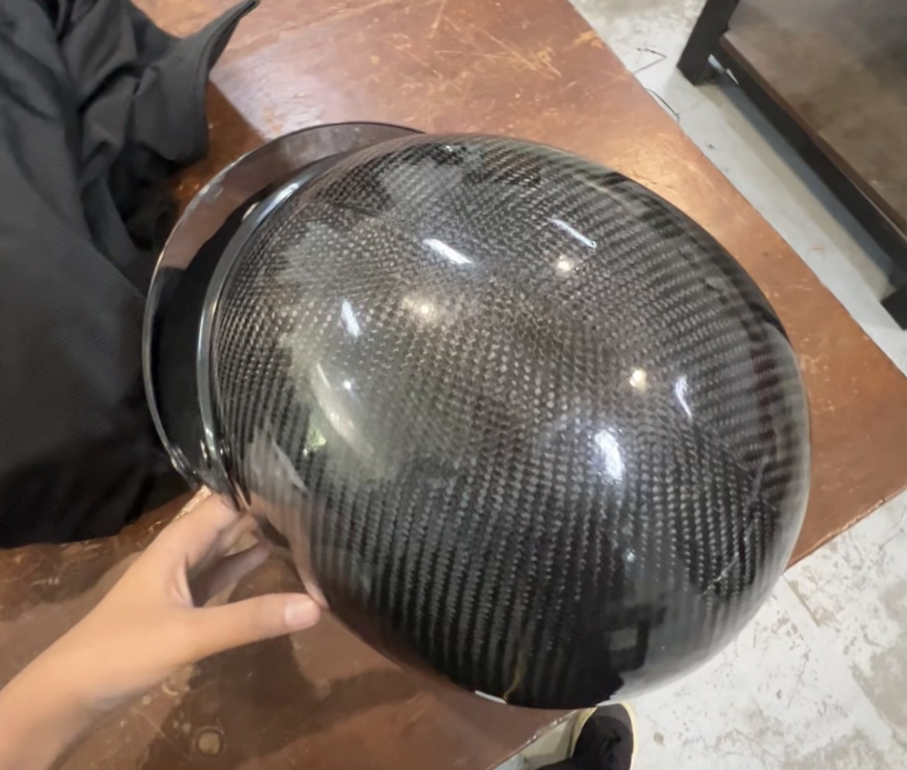
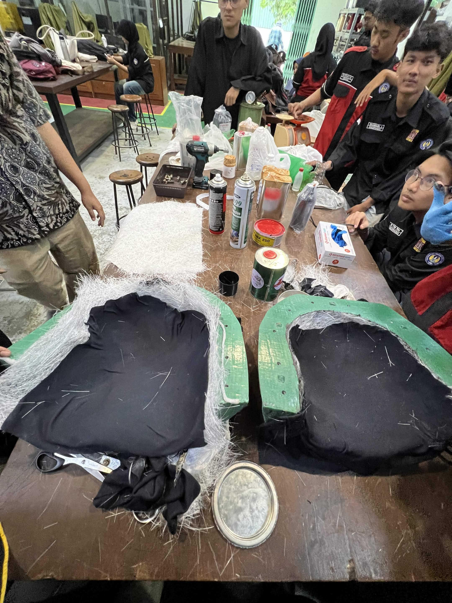
Memproduksi Helm Menggunakan Serat Karbon
Jun 2025 | DPTM FT UNY🔹Mengembangkan proses fabrikasi helm berbasis komposit serat karbon serta melakukan evaluasi kualitas hasil manufaktur.
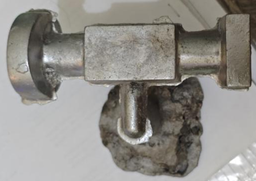
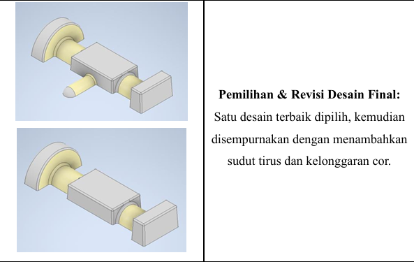
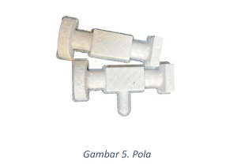
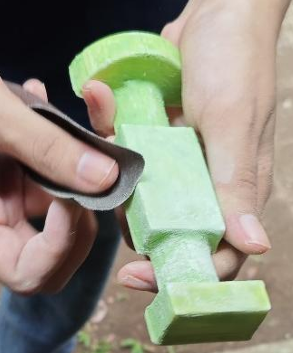
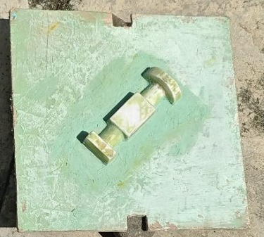
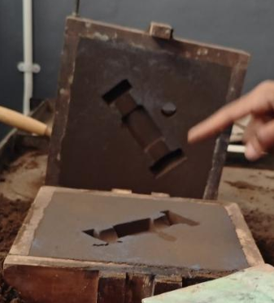
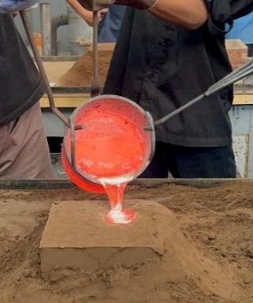
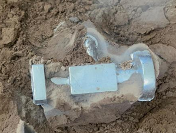
Membuat Cetakan/Mold Hammer Head dengan Mesin 3D Print pada Proses Pengecoran
Jun 2025 | DPTM FT UNY🔹Merancang dan membuat cetakan (mold) hammer head menggunakan 3D printing sebagai pola untuk mendukung proses pengecoran logam.
🔹Mengintegrasikan teknologi manufaktur aditif dengan proses pengecoran guna meningkatkan fleksibilitas desain dan efisiensi pembuatan cetakan.
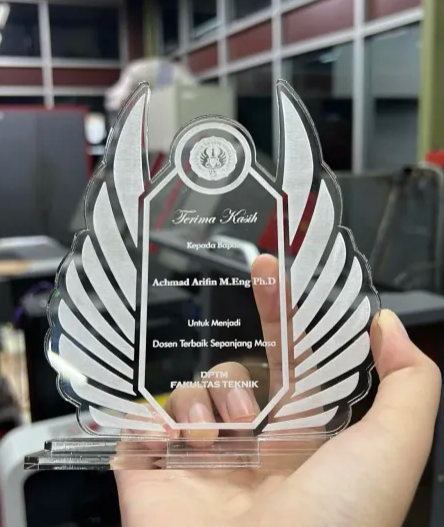
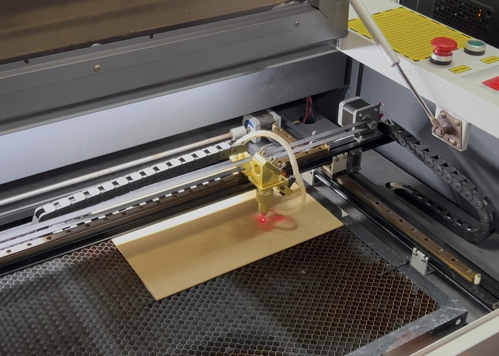
Membuat Produk Berupa Plakat Akrilik Menggunakan Mesin Laser Cutting CO2
Jun 2025 | DPTM FT UNY🔹Mendesain dan memproduksi plakat akrilik menggunakan mesin laser cutting CO₂ dengan memperhatikan ketelitian dimensi dan kualitas hasil pemotongan.
🔹Memastikan kualitas produk melalui pengaturan parameter mesin yang tepat untuk menghasilkan potongan yang presisi dan permukaan yang rapi.
Pengalaman Organisasi
Wakil Kepala Divisi MIKAT (Minat dan Bakat)
Jan – Des 2024 | HIMA Mesin UNY🔹Mengelola dan mengawasi perkembangan staf.
🔹Berkontribusi dalam segala program kerja HIMA Mesin FT UNY 2024.
Manager Tim Divisi PUBG Mobile
Jan – Des 2024 | UNY E-sport🔹Mengelola operasional dan kebutuhan tim dalam persiapan kompetisi PUBG Mobile di luar maupun di lingkungan UNY Esport.
🔹Mengatur koordinasi internal tim, termasuk jadwal latihan, strategi, dan komunikasi antar anggota.
Ketua Pelaksana – Green Campus
Okt 2023 | HIMA Mesin UNY🔹Bertanggung jawab atas berjalannya acara Green Campus hingga selesai.
🔹Memberikan materi penyuluhan mengenai Green Campus kepada mahasiswa terutama kepada mahasiswa baru.
Staf Divisi MIKAT (Minat dan Bakat)
Jan – Des 2023 | HIMA Mesin UNY🔹Sebagai staf di periode kepengurusan 2023 di bidang E-sports.
🔹Bertanggung jawab atas Program Kerja PPMB (Pendukungan Pengembangan Minat dan Bakat), dan MEC (Mechanical Engineering Competition).
🔹Sebagai pelatih, penyalur, pembuat acara, dan mewadahi prestasi mahasiswa di bidang non-akademik.